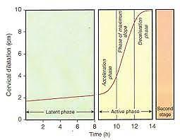

2 · Definitions & causes of onset of labor
Normal labor
Definition: It is the process of spontaneous delivery of single full term viable fetus presented by the vertex through the birth canal within reasonable time without interference or complications to the mother or the fetus.
Abnormal labor (dystocia)
Any deviation from the definition of normal labor is called abnormal labor.
Causes of onset of labor
1 — Hormonal factors
↑ Estrogen, ↓ Progesterone, ↑ Prostaglandin F2α and ↑ Oxytocin → uterine contraction.
2 — Mechanical factors
Uterine distension and stretch of the lower uterine segment → uterine contraction.
3 · Prelabor — the premonitory stage
Prelabor is the premonitory stage of labor and begins 2–3 weeks before the onset of true labor in primigravida and a few days before in multipara.
It is associated with an increase in oxytocin receptors in myometrium.
Changes seen during prelabor
Lightening
The decrease in fundal height seen at term. This is due to the descend of presenting part into the pelvis.
Cervical ripening
Softening of the cervix.
False labor pains
Irregular contractions that do not produce cervical change (see comparison below).
4 · True vs False labor pains
| Feature |
True labor pains |
False labor pains |
| Cervical changes (dilatation and effacement) |
Present |
Absent |
| Frequency and duration of contractions |
Regular and gradually increase |
Irregular |
| Pain |
Lower abdomen and back, radiating to thighs |
Lower abdominal only |
| Bag of water |
Formed |
Not formed |
| Show |
Present |
Absent |
| Relief with enema / sedation |
No |
Yes |
5 · The four functional stages of labor
Onset of true labor is characterized by:
- Appearance of true labor pain.
- Appearance of show.
True labor is divided into four functional stages:
First stage
Starts with onset of true labor pain and ends with full dilatation of cervix (10 cm). Duration is 12 hours in primi and 6 hours in multipara.
Second stage
Starts with full dilatation of cervix and ends with expulsion of fetus from birth canal. Duration is 1–2 hours in primi and 30 minutes in multipara.
Third stage
Begins after expulsion of fetus and ends with expulsion of placenta and membranes (after births). Duration is about 15 minutes in both primi & multipara. The duration is reduced to 5 minutes in active management.
Fourth stage
1 hour observation period after the delivery of placenta.
6 · Uterine contractions & Friedman curve
Uterine contractions
- Throughout pregnancy, a pregnant female experiences contractions which are painless and irregular called as Braxton Hicks contractions.
- During labor: the contractions are painful and lead to dilatation of cervix.
- The pacemaker of uterine contractions is situated at the cornu (the right pacemaker predominates over the left).
- Contractions spread from pacemaker area throughout uterus at 2 cm/sec, depolarizing the whole organ within 15 secs.
- Contractions are predominant over the fundus.
Units for measuring uterine contractions
- mmHg.
- Montevideo unit (MV unit) = Intensity of uterine contraction × number of contractions in 3 minutes.
The Friedman curve (cervical dilatation over time)
Source visual

Figure 1 — Friedman curve. The pattern of cervical dilatation during the latent and active phase of normal labor is a sigmoid curve. This curve is called as Friedman curve.
7 · Physiology of the first stage
Presentation
The first part of the fetus felt by vaginal examination. It is cephalic in 95%, breech in 3.5% and shoulder in 0.5%.
Lie
The relation of the long axis of the fetus to the long axis of the mother. If the long axis of the fetus is parallel to that of the mother, it is a longitudinal lie (99%). If it is perpendicular or oblique, it is a transverse or oblique lie (1%).
Attitude
The relation of the fetal parts to each other. Normally, the fetus is in an attitude of generalized flexion.
Position & Denominator
Position: the relation of certain point on the presenting part of the fetus (the denominator) to the back of the mother.
Denominator: is the occiput in vertex presentation, the chin in face, the frontal bone in brow, and the sacrum in breech presentation.
Occipito-anterior (OA) position is more common than occipito-posterior (OP).
Left OA is more common than right OA.
First stage of labor — Latent vs Active stage
The stage of cervical effacement and dilatation is further divided into 2 phases.
| Latent stage | Active stage |
|---|
| It starts from true labor pains and ends when cervix is 3 to 5 cm dilated. Its duration is 12 hours in nulliparous and 8 hours in multiparous females. |
It begins with cervical dilatation of 3–5 cm, with regular uterine contractions. Normal cervical dilatation rate in primi is 1.2 cm/hr and 1.5 cm/hr for multiparous women. |
| Mainly concerned with cervical effacement. |
Mainly concerned with cervical dilatation. |
Friedman sub-phases of the active phase
| Sub-phase | Cervical dilatation |
|---|
| Acceleration phase | 3–4 cm |
| Phase of maximum slope | 4–9 cm |
| Deceleration phase | 9–10 cm |
8 · Abnormalities of the latent & active phases
Prolonged latent phase
- Greater than 20 hours in primi.
- Greater than 14 hours in multipara.
Causes
- Excessive sedation or epidural analgesia.
- Poor cervical conditions (e.g. thick, uneffaced or undilated).
- False labor (most common cause in multipara).
Management — either of 2 options
- Therapeutic test: 15 mg of morphine is given intramuscularly. Most of the patients are asleep within 1 hour and awake 4 to 5 hours later, in active labour or in no labor.
- Oxytocin stimulation.
Abnormalities of active phase
Protracted active phase = slow rate of cervical dilatation or descent of head.
| Features |
Cervical dilatation |
Descend of head |
Management |
| Nulliparous |
< 1.2 cm/hr |
< 1 cm/hr |
Expectant and support. If CPD is present → CS |
| multiparous |
< 1.5 cm/hr |
< 2 cm/hr |
Arrest disorders
- Arrest of dilatation: cessation of dilatation for 2 or more hours.
- Arrest of descent: cessation of descent for 1 or more hours.
Factors contributing to arrest and dilatation
- Excessive sedation.
- Epidural analgesia.
- Fetal malposition.
- CPD.
Treatment of protracted disorders is expectant management and oxytocin in absence of any cephalopelvic disproportion.
9 · Second stage of labor & mechanism of labor
It begins from full dilatation of cervix and ends with expulsion of fetus. In the second stage, the expulsive efforts by a woman play more important role than uterine contractions.
Second stage timing
| Parity |
Normal |
Prolonged without epidural |
Prolonged with epidural |
| Nulliparous |
1 hr |
2 hrs (+1 for arrest) |
3 hrs (+1 for arrest) |
| Multiparous |
30 mins |
1 hr (+1 for arrest) |
2 hrs (+1 for arrest) |
2nd stage arrest: when there is no change in descent of head for 1 hour more than prolonged.
Mechanism of normal labor
A. Delivery of the head — includes the following movements:
- Descent: caused by uterine contractions.
- Engagement: it is the passage of the widest transverse diameter of the presenting part (biparietal diameter in vertex presentation) through the pelvic brim.
Diagnosed by:
- Abdominally: rule of fifths: 2/5 or less of the head is felt abdominally above the symphysis pubis by the pelvic grip.
- Vaginally: the vertex is felt at or below the ischial spine (zero station).
- Increased flexion
- Internal rotation
- Extension
- Restitution
- External rotation
B. Delivery of the shoulder and body.
10 · Third stage, fourth stage & placental separation
It extends from the delivery of the baby to complete expulsion of placenta and membranes.
Expectant vs Active management of the third stage
| Expectant management | Active management |
|---|
| In this method the placental separation and its descent into vagina is allowed to occur spontaneously with minimal assistance. |
The placental separation is actively facilitated and powerful uterine contractions are initiated to reduce the incidence of third stage complications (like PPH). |
| Duration of third stage is 15 mins, so increased chances of PPH and increased maternal mortality. |
Duration is reduced to 5 mins, so less chances of PPH and maternal mortality. |
| |
Active management of labor includes: administration of a uterotonic soon after birth of baby, delayed cord clamping, controlled cord traction and uterine massage. |
The fourth stage
Some consider the first hour after third stage is critical and the mother should be under close observation for PPH.
Active management of third stage is preferred over expectant management because it cuts duration from 15 min to 5 min and lowers PPH risk and maternal mortality.
Signs of placental separation (6 items)
- Uterus becomes globular, hard and mobile.
- Sudden gush of blood.
- Suprapubic bulge due to the separated placenta that occupies the upper vagina and lower uterine segment.
- Rise of the fundal level above the umbilicus.
- Lengthening of the umbilical.
- Absence of pulsation in the umbilical stump.
11 · Active management of normal labor — First stage (history, exam, investigations)
(I) History taking
- Complete obstetric history.
- History of present pregnancy:
- Duration of pregnancy.
- Medical disorders and complications during this pregnancy.
- History of present labor:
- Labor pains: onset, frequency and duration.
(II) Examination
General examination
- Vital signs.
- Chest and heart examination.
- Lower limbs for oedema.
Abdominal examination
- Fundal level — Fundal grip — Umbilical grip — Pelvic grips — FHS.
- Scar of previous operations (e.g. C.S, myomectomy or hysterotomy).
Pelvic examination
- a — Cervix: Dilatation, Effacement, Membranes (ruptured or intact).
- b — Presenting part and its position.
- c — Station of the presenting part.
- d — Pelvic capacity.
(III) Investigations
- Blood group — Rh typing.
- Urine for albumin and sugar.
- Hb%.
- Ultrasonography.
12 · Active procedures & care of the newborn
(IV) Active procedures — 1st stage
- Evacuation of the rectum and bladder.
- Analgesia.
- Partogram: graphic recording of all events of labor either maternal (vital signs, uterine contractions, cervical dilatation, and used fluid and drugs) or fetal (fetal heart rate, head descent).
- Amniotomy.
- Oxytocin to augment labor and regulate uterine contraction (3 in 10 minutes).
- Fetal monitoring.
2nd stage
- Transfer to delivery room.
- Delivery of the head: the important goal is prevention of perineal lacerations by good support of the perineum and episiotomy.
- Clamping of the cord: but it is contraindicated in preterm baby and in Rh – ve mothers.
3rd stage
- Ecbolics: Oxytocin and Ergometrine for rapid separation of the placenta.
- Examination of the placenta and membranes.
- Exploration of the genital tract for any laceration and repairing of it.
Care of the newborn
- Clearance of the air passages: by aspiration of the mucus from the pharynx.
- Determination of the APGAR score.
- Examination for congenital anomalies or injuries.
- Care of the eyes by putting antibiotic drops.
Cord clamping is contraindicated in preterm baby and in Rh – ve mothers.